import pandas as pd
import geopandas as gpdWastewater Report
Data Analysis and Report for Vermont Wastewater Data
The below code sets the project root to the right location, making file paths easier to manage
import os
from pathlib import Path
_project_root = Path.cwd()
while not (_project_root / ".git").exists():
_project_root = _project_root.parent
if _project_root == _project_root.parent:
raise RuntimeError(".git not found — are you inside the repo?")
os.chdir(_project_root)
print(os.getcwd())/Users/AGT/Desktop/ORCA/atticus-tarleton-okemo-dataCreating paths to the data
data_path = Path("../react-vt-data/backend/Data/_Processed/wastewater")
soil_path = data_path / "soil_suitability"
treatment_path = data_path / "treatment_facilities"
service_path = data_path / "service_areas"Soil Suitability analysis
Reading in the data
info_ACRPC = pd.read_parquet(soil_path/"info_ACRPC_Soil_Septic.parquet")
info_BCRC = pd.read_parquet(soil_path/"info_BCRC_Soil_Septic.parquet")
info_CCRPC = pd.read_parquet(soil_path/"info_CCRPC_Soil_Septic.parquet")
info_CVRPC = pd.read_parquet(soil_path/"info_CVRPC_Soil_Septic.parquet")
info_LCPC = pd.read_parquet(soil_path/"info_LCPC_Soil_Septic.parquet")
info_MARC = pd.read_parquet(soil_path/"info_MARC_Soil_Septic.parquet")
info_NWRPC = pd.read_parquet(soil_path/"info_NWRPC_Soil_Septic.parquet")
geom_ACRPC = gpd.read_parquet(soil_path/"geom_ACRPC_Soil_Septic.parquet")
geom_BCRC = gpd.read_parquet(soil_path/"geom_BCRC_Soil_Septic.parquet")
geom_CCRPC = gpd.read_parquet(soil_path/"geom_CCRPC_Soil_Septic.parquet")
geom_CVRPC = gpd.read_parquet(soil_path/"geom_CVRPC_Soil_Septic.parquet")
geom_LCPC = gpd.read_parquet(soil_path/"geom_LCPC_Soil_Septic.parquet")
geom_MARC = gpd.read_parquet(soil_path/"geom_MARC_Soil_Septic.parquet")
geom_NWRPC = gpd.read_parquet(soil_path/"geom_NWRPC_Soil_Septic.parquet")making a plot to see the geometry data
import matplotlib.pyplot as plt
fig, ax = plt.subplots(figsize=(10, 10))
geom_ACRPC.plot(ax=ax, color='lightgray')
geom_BCRC.plot(ax=ax, color='blue')
geom_CCRPC.plot(ax=ax, color='purple')
geom_CVRPC.plot(ax=ax, color='green')
geom_LCPC.plot(ax=ax, color='orange')
geom_MARC.plot(ax=ax, color='yellow')
geom_NWRPC.plot(ax=ax, color='red')
plt.show()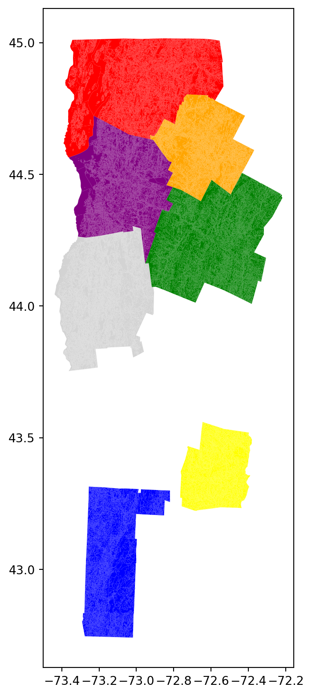
What this plot shows is that we do not have all of the soil suitability data. We are missing some of Northeastern Vermont, Central Vermont, and a bit of Southeastern Vermont as well. While there is still a lot of data available, this merits future research to see if there is soil suitability data available for the regional planning commissions that we don’t have data for.
getting the amount of each soil suitability level for each regional planning commission
import numpy as np
info_soil_data = [info_ACRPC, info_CCRPC, info_CVRPC, info_LCPC, info_MARC, info_NWRPC, info_BCRC]
whole_vermont_info = pd.concat(info_soil_data, ignore_index=True)
info_soil_data.append(whole_vermont_info)
info_soil_data_name = ["ACRPC", "CCRPC", "CVRPC", "LCPC", "MARC", "NWRPC", "BCRC", "Vermont"]
for i in range(len(info_soil_data)):
# print(info_soil_data[i].sort_values(by='Suitability').groupby(['Suitability'])['Acres'].sum())
# print(np.sort(info_soil_data[i]['Suitability'].unique()))
plt.bar(height = info_soil_data[i].sort_values(by='Suitability').groupby(['Suitability'])['Acres'].sum(), x = np.sort(info_soil_data[i]['Suitability'].unique()))
plt.xticks(rotation = 45)
plt.title(f"Soil Suitability Distribution by Acres for {info_soil_data_name[i]}")
plt.xlabel("Soil Suitability Level")
plt.ylabel("Number of Acres")
plt.show()
whole_vermont_info = pd.concat(info_soil_data, ignore_index=True)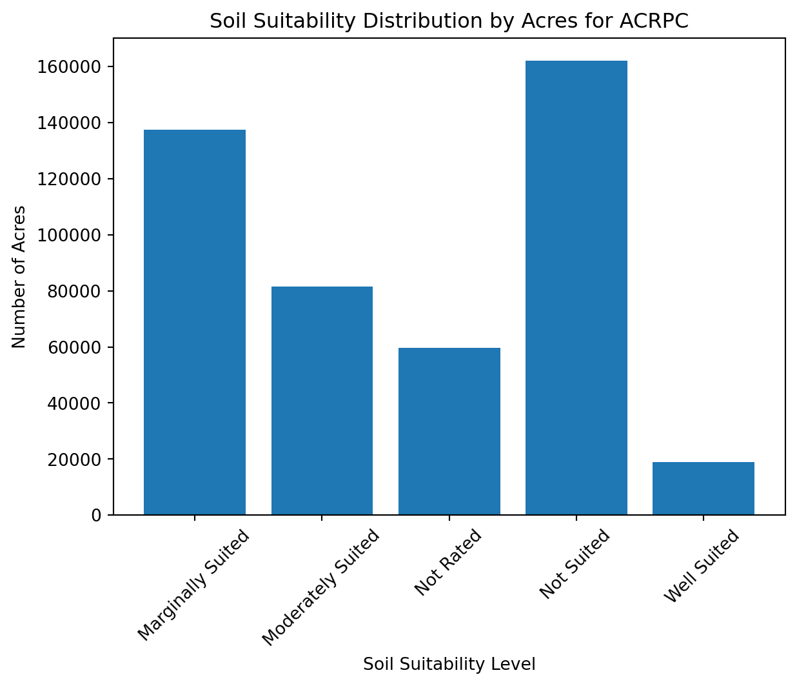
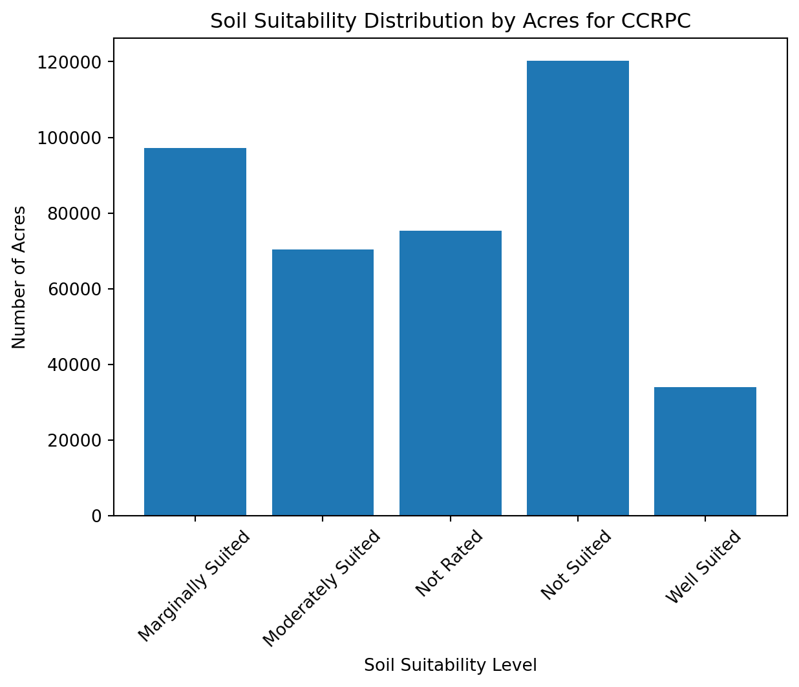
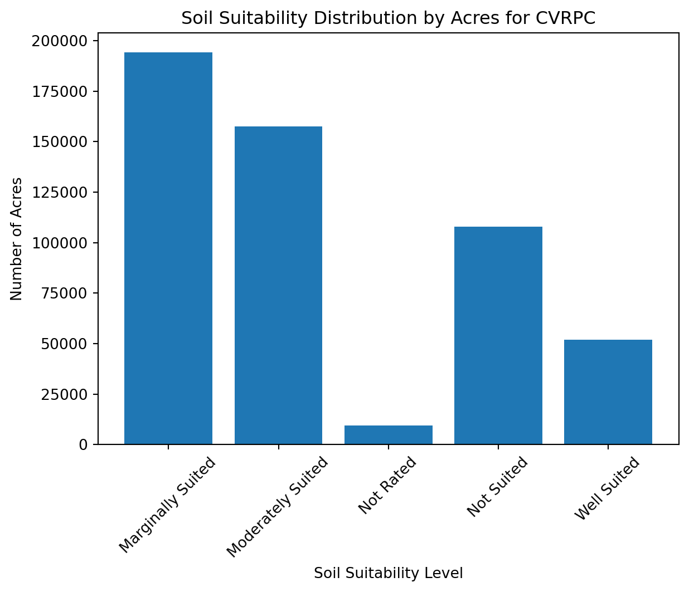
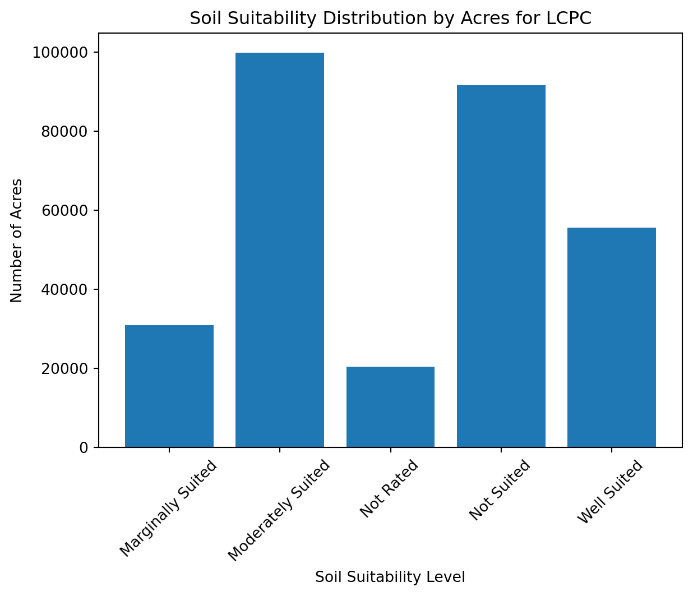
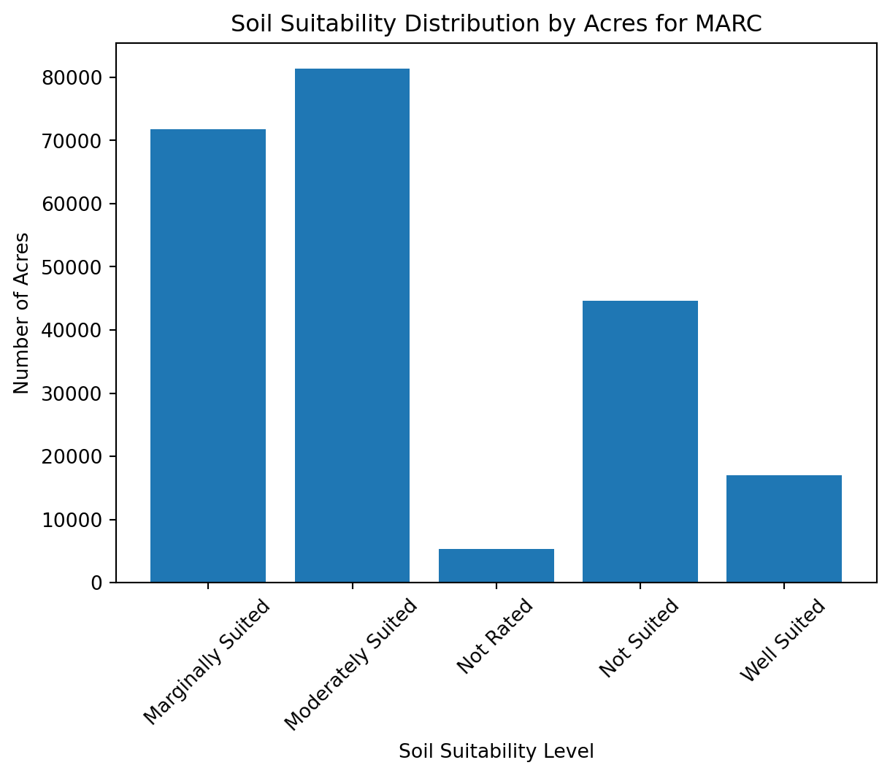
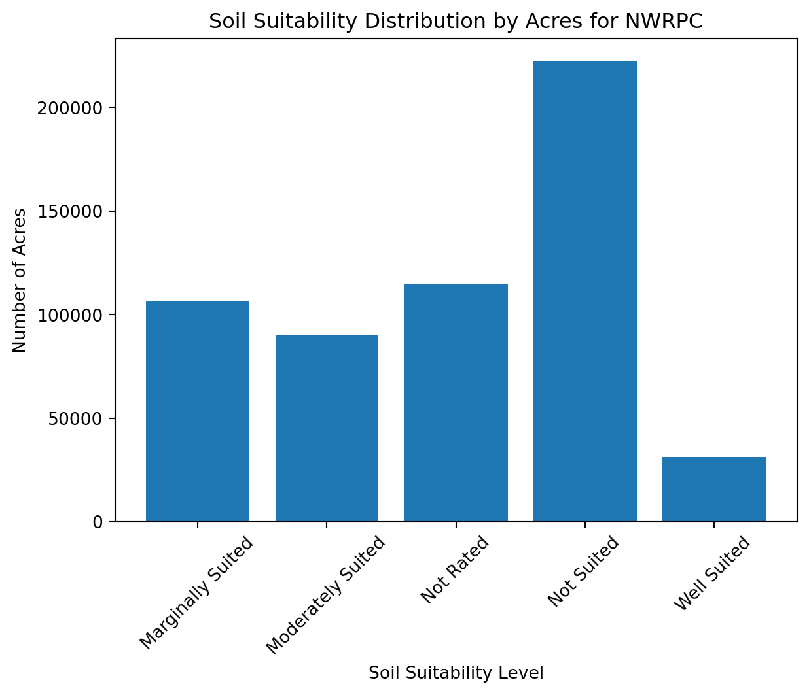
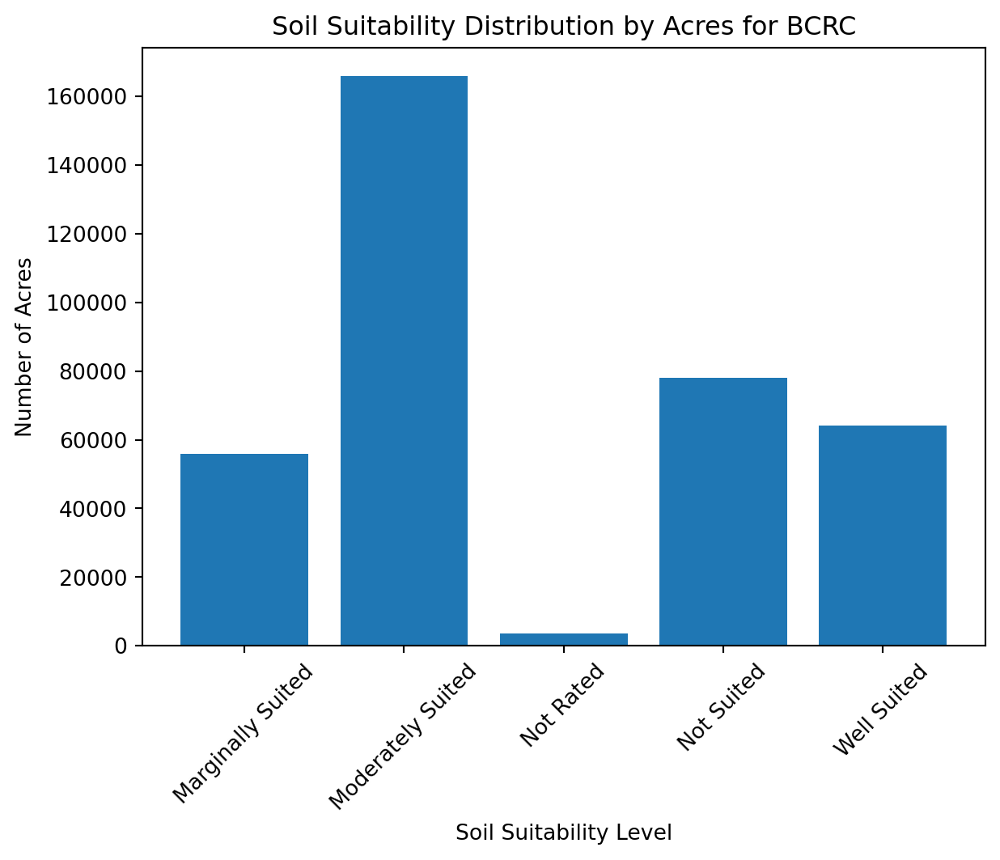
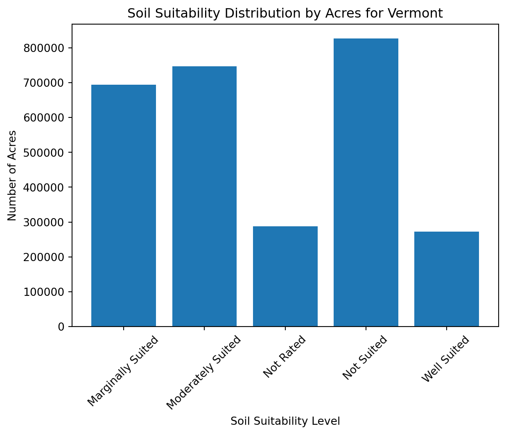
What these charts are going over is the number of acres of each level of soil suitability for septic tanks for each regional planning commission, as well as Vermont as a whole. There is an important caveat that the Vermont section is not all of Vermont, but rather all of the data we have, as there are a few regional planning commissions who’s data we don’t have.
What these charts show is that there is a lot of variability between regions in terms of the distribution of soil suitability. By this I mean that some regional planning commissions have radically different soil suitabilities, with one example being that the NWRCP has ‘not suited’ as by far its largest soil suitability level, while for BCRC ‘moderately suited’ is its largest soil suitability level, with ‘not suited’ coming in a distant second.
Looking a Vermont as a whole, either ‘not suited’ or ‘moderately suited’ is the largest soil suitability level for most regions, though CVRCP bucks that trend with ‘marginally suited’ being its most common soil suitability level. This frequency is shown on the Vermont total numbers, with ‘not suited’ being the most common soil suitability level, ‘moderately suited’ being the next most common, and ‘marginally suited’ being a close third. While the top 3 are all pretty close in terms of acres, the other two, ‘not rated’ and ‘well suited’, have a lot fewer acres. What this means for Vermont as a whole is a lot of its land is not really suited for septic tanks between all the acres that are ‘not suited’ or ‘marginally suited’. After that a good amount of land is ‘moderately suitable’, indicating that septic tanks could be placed there, though conditions are not perfect for it. And lastly, there is a relatively small percentage of land that is ‘well suited’, and no regions have ‘well suited’ as their top two most common soil suitability levels, indicating that no region of Vermont is perfect for septic systems.
Wastewater Treatment Facilities
Reading in the data
treatment_geom = gpd.read_parquet(treatment_path/"treatment_facility_geom.parquet")
treatment_info = pd.read_parquet(treatment_path/"treatment_facility_info.parquet")
permit_info = pd.read_parquet(treatment_path/"treatment_facility_permit_info.parquet")
miscellaneous_info = pd.read_parquet(treatment_path/"treatment_facility_miscellaneous_info.parquet")Seeing whats in the data
display(treatment_geom.head())
display(treatment_info.head())
display(permit_info.head())
display(miscellaneous_info.head())| ID | Latitude | Longitude | geometry | |
|---|---|---|---|---|
| 0 | 1 | None | None | POINT Z (-73.21769 44.99218 0) |
| 1 | 2 | 43.0653 | -73.1432 | POINT (-73.14316 43.0653) |
| 2 | 3 | 43.0645 | -73.1536 | POINT (-73.15365 43.06451) |
| 3 | 4 | None | None | POINT (-72.05144 44.29515) |
| 4 | 5 | 44.2104 | -72.5214 | POINT (-72.52144 44.21038) |
| ID | FacilityID | DesignHydraulicCapacityInMGD | SeptageReceivedAtThisFacility | WWInventoryURL | FacilityName | TownName | Municipal_Name | County | RPC | |
|---|---|---|---|---|---|---|---|---|---|---|
| 0 | 1 | None | 0.00 | N | None | Alburgh Fire District 1 | Alburgh | Alburgh | Grand Isle | NRPC |
| 1 | 2 | 554 | 0.00 | N | https://anrweb.vt.gov/DEC/WWInventory/UpdateFa... | H & H Properties | Arlington | Arlington | Bennington | BCRC |
| 2 | 3 | 42 | 0.02 | N | https://anrweb.vt.gov/DEC/WWInventory/UpdateFa... | Arlington School | Arlington | Arlington | Bennington | BCRC |
| 3 | 4 | None | 0.00 | N | None | Barnet Hydro | Barnet | Barnet | Caledonia | NVDA |
| 4 | 5 | 2 | 8.00 | Y | https://anrweb.vt.gov/DEC/WWInventory/UpdateFa... | Barre City | Barre | BarreCity | Washington | CVRPC |
| ID | PermitID | PermitRecordID | NPDESPermitNumber | PermitLink | PermitteeName | |
|---|---|---|---|---|---|---|
| 0 | 1 | 3-1510 | None | VT0001201 | https://anrweb.vt.gov/PubDocs/DEC/WSMD/Wastewa... | Alburgh Fire District #1 |
| 1 | 2 | 3-1405 | None | VT0001180 | https://anrweb.vt.gov/ANR/vtANR/DocBrowser.asp... | None |
| 2 | 3 | 3-1372 | None | VT0022934 | https://anrweb.vt.gov/ANR/vtANR/DocBrowser.asp... | None |
| 3 | 4 | 3-1549 | 1,305 | VT0120013 | https://anrweb.vt.gov/ANR/vtANR/DocBrowser.asp... | Enel Green Power NA Inc |
| 4 | 5 | 3-1272 | 2,497 | VT0100889 | https://anrweb.vt.gov/ANR/vtANR/DocBrowser.asp... | None |
| ID | SourceFile | GEOIDTXT | |
|---|---|---|---|
| 0 | 1 | AlburghWWTF.geojson | 5001300860 |
| 1 | 2 | ArlingtonWWTF.geojson | 5000301450 |
| 2 | 3 | ArlingtonWWTF.geojson | 5000301450 |
| 3 | 4 | BarnetWWTF.geojson | 5000502875 |
| 4 | 5 | BarreWWTF.geojson | 5002303250 |
Getting summary statistics from the treatment_info table
print(treatment_info.groupby(['RPC'])['SeptageReceivedAtThisFacility'].value_counts())RPC SeptageReceivedAtThisFacility
ACRPC N 7
Y 2
BCRC N 5
Y 1
CCRPC N 19
Y 7
CVRPC N 17
Y 2
LCPC N 3
Y 1
MARC N 6
Y 1
NRPC N 12
Y 1
NVDA N 18
Y 3
RRPC N 16
Y 1
TRORC N 16
Y 1
WRC N 18
Y 3
Name: count, dtype: int64treatment_info['DesignHydraulicCapacityInMGD'] = pd.to_numeric(treatment_info['DesignHydraulicCapacityInMGD'], errors='coerce')
print(f"the average DesignHydraulicCapacityInMGD: {treatment_info['DesignHydraulicCapacityInMGD'].mean()}")the average DesignHydraulicCapacityInMGD: 1.0086249999999999Plotting the geometry data
fig, ax = plt.subplots(figsize=(8, 6))
treatment_geom.plot(ax=ax, color='red', markersize=20)
plt.show()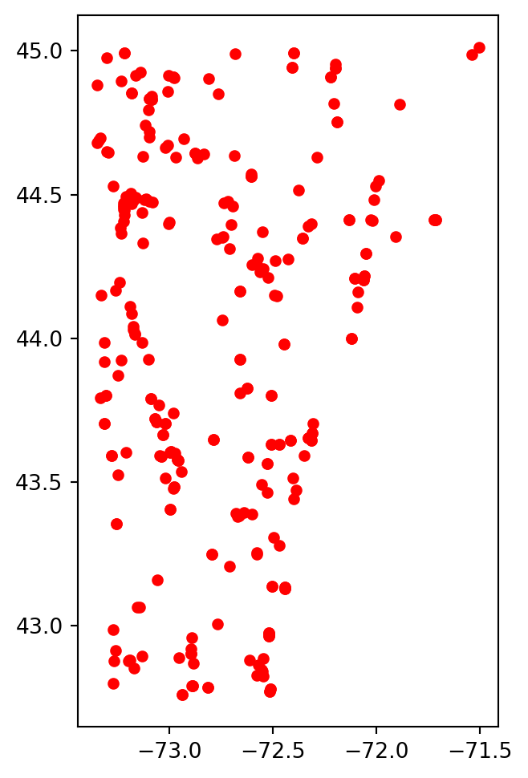
What this plot shows is that there are a lot of wastewater treatment facilities, distributed relatively evenly throughout Vermont. However, while the distribution is spread pretty evenly throughout Vermont, there is a lower density of treatment facilities in Northeastern Vermont.
Putting the two maps together, so you can see the boundaries of the Regional planning districts, and where their wastewater treatment facilities are
fig, ax = plt.subplots(figsize=(10, 10))
geom_ACRPC.plot(ax=ax, color='lightgray')
geom_BCRC.plot(ax=ax, color='blue')
geom_CCRPC.plot(ax=ax, color='purple')
geom_CVRPC.plot(ax=ax, color='green')
geom_LCPC.plot(ax=ax, color='orange')
geom_MARC.plot(ax=ax, color='yellow')
geom_NWRPC.plot(ax=ax, color='red')
treatment_geom.plot(ax=ax, color='white', markersize=20, edgecolor='black')
ax.set_xlabel("Latitude")
ax.set_ylabel("Longitude")
plt.show()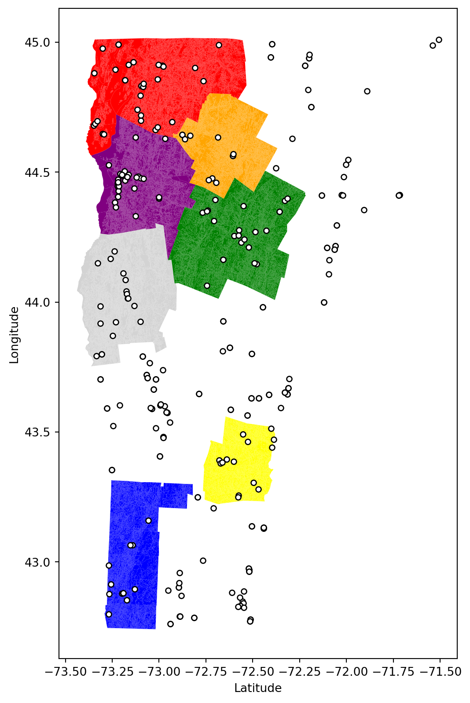
What this plot combines is the soil suitability data we do have with the the location of wastewater treatment facilities. This highlights the lack of wastewater treatment facilites in the Northeast and Central-East of Vermont as well as the lack of soil suitability data there as well. Any missing data for soil suitability is not idea, but it is only compounded by the likely lack of options other than septic tanks, which our soil suitability data provides insight about
Wastewater Service Areas
reading in the data
service_geom = gpd.read_parquet(service_path/"service_area_geom.parquet")
service_info = pd.read_parquet(service_path/"service_area_info.parquet")
service_miscellaneous_info = pd.read_parquet(service_path/"service_area_miscellaneous_info.parquet")now to take a look at the datasets
display(service_geom.head())
display(service_info.head())
display(service_miscellaneous_info.head())| ID | geometry | |
|---|---|---|
| 0 | 1 | POLYGON Z ((-73.30123 44.97733 0, -73.30153 44... |
| 1 | 2 | POLYGON ((-73.1506 43.06635, -73.15035 43.0664... |
| 2 | 3 | POLYGON ((-72.4721 44.18057, -72.46987 44.1842... |
| 3 | 4 | MULTIPOLYGON Z (((-72.19555 44.75882 0, -72.19... |
| 4 | 5 | MULTIPOLYGON Z (((-72.20236 44.8085 0, -72.202... |
| ID | TownID | TreatmentFacility | SystemName | SystemOwner | TownName | Municipal_Name | County | RPC | |
|---|---|---|---|---|---|---|---|---|---|
| 0 | 1 | 13005.0 | None | Alburgh Waste Water Treatment Facility | Village of Alburgh | Alburgh | Alburgh | Grand Isle | NRPC |
| 1 | 2 | 3005.0 | Arlington | Arlington School | Arlington School District | Arlington | Arlington | Bennington | BCRC |
| 2 | 3 | 23005.0 | 3-1272 | Barre City | Barre | Barre | BarreCity | Washington | CVRPC |
| 3 | 4 | 0.0 | None | Barton | Barton Village | Barton | Barton | Orleans | NVDA |
| 4 | 5 | 17040.0 | None | Barton | None | Barton | Barton | Orleans | NVDA |
| ID | GISNotes | GISDate | GISUpdate | Creator | SourceFile | GEOIDTXT | |
|---|---|---|---|---|---|---|---|
| 0 | 1 | None | None | 2008-06-17 | VTANR | AlburghServieArea.geojson | 5001300860 |
| 1 | 2 | Data Digitized from parcel maps | 2004 | 2007 | VTANR | ArlingtonServiceArea.geojson | 5000301450 |
| 2 | 3 | None | 2008-06-24 | 2008-06-24 | VTANR | BarreServiceArea.geojson | 5002303250 |
| 3 | 4 | None | None | None | VTANR | BartonServiceAreas.geojson | 5001903550 |
| 4 | 5 | None | None | None | VTANR | BartonServiceAreas.geojson | 5001903550 |
now to make some graphs
service_geom.plot(color = 'violet')
plt.show()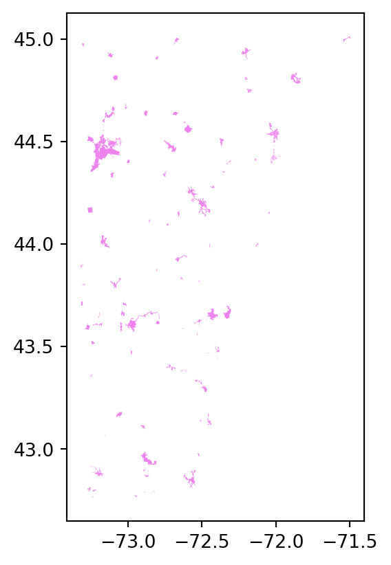
What this plot shows is that there is not a lot of space overall in Vermont that is covered by wastewater service areas. Also, while the space covered by wastewater service areas is spread pretty evenly throughout Vermont, there is a lower density of service areas in Northeastern Vermont.
fig, ax = plt.subplots(figsize=(12, 10))
service_geom.plot(ax=ax, color='violet')
treatment_geom.plot(ax=ax, color='white', markersize=2, edgecolor='black')
ax.set_title("Plot of wastewater treatment facilities and wastewater service areas")
ax.set_xlabel("Latitude")
ax.set_ylabel("Longitude")
plt.show()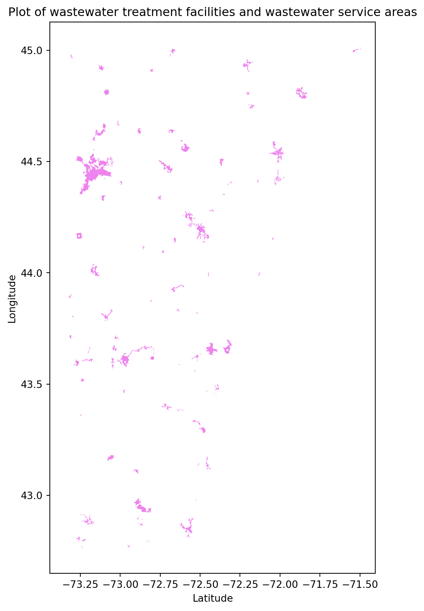
What this plot shows is that the wastewater treatment service areas do line up with wastewater treatment facilities. That being said, the service areas don’t line up perfectly with the treatment facilities, most notably in that there are a number of treatment facilities that don’t seem to have an associated service area. This could be a gap in our service area data, or it could be that the treatment facilities include kinds of wastewater facilities that don’t serve the general populus. This is an area that needs to be looked in to more, to see if there are data holes.
fig, ax = plt.subplots(figsize=(12, 10))
geom_ACRPC.plot(ax=ax, color='lightgray')
geom_BCRC.plot(ax=ax, color='blue')
geom_CCRPC.plot(ax=ax, color='purple')
geom_CVRPC.plot(ax=ax, color='paleturquoise')
geom_LCPC.plot(ax=ax, color='green')
geom_MARC.plot(ax=ax, color='yellow')
geom_NWRPC.plot(ax=ax, color='lightcyan')
service_geom.plot(ax=ax, color='violet')
treatment_geom.plot(ax=ax, color='white', markersize=10, edgecolor='black')
ax.set_title("Plot of RPCs that we have data on, treatment facilities, and wastewater service areas")
ax.set_xlabel("Latitude")
ax.set_ylabel("Longitude")
plt.show()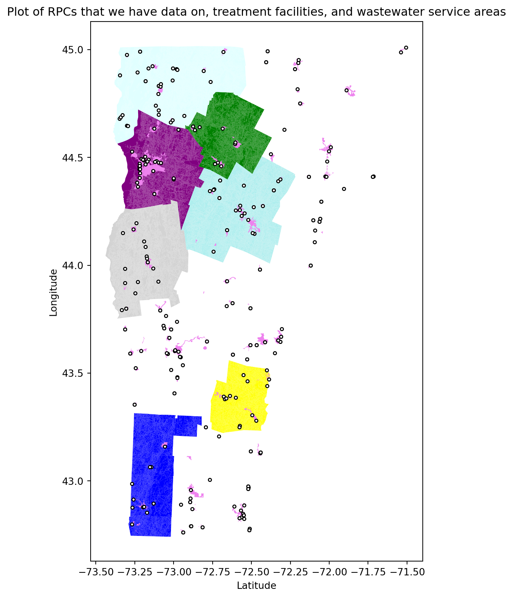
What this plot shows is how the wastewater treatment service areas and facilities line up with the septic tank soil suitability data that we have. And what this shows is a critical lack of data for septic tank soil suitability for Northeast Vermont. Northeast Vermont, as identified by earlier graphs, is one of the locations in Vermont with the lowest density of wastewater treatment service areas to its total land, and so the lack of information about suitability for septic tanks, which are an alternative to a public sewage systems which is represented by the wastewater treatment service areas.